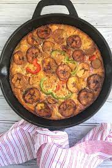

Plantain Frittata is a breakfast made of eggs and plantain slightly cooked together, usually you have to steam the eggs with fried plantain laid on top of it.
Ingredients
- 3 ripe plantains
- 1 small tomato
- 1/2 chopped red bell pepper
- 1/2 chopped green bell pepper
- 1 tbsp cooking oil
- 1 chopped medium onion
- 3 eggs
Steps
- Peel and fry the plantains until golden brown and set aside.
- In a sauce pan, heat a tbsp of oil. Saute onion until transclucent.
- Add the peppers and stir fry for about a minute.
- Season with salt and add mix with eggs in a bowl.
- Pour mixture into greased pan and top with the fried plantains.
- Cover frying pan with and lid and cook on medium heat until done.